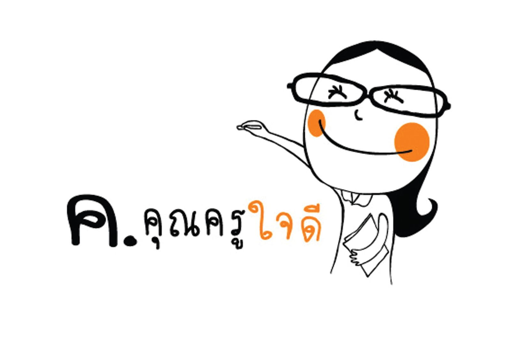

นางสาววรรณนิสา รื่นแสง
ชื่อเล่น "แตงกวา"
วันเดือนปีเกิด :: วันที่ 14 พฤษภาคม พ.ศ.2542
ตัวการตูนที่ชื่อชอบ พิกเลตเเละพองเพื่อน
รหัสนักศึกษา 16015157
สาขาวิชาคอมพิวเตอร์ศึกษา คณะครุศาสตร์
มหาวิทยาลัยราชภัฏพระนครศรีอยุธยา
| |
นางสาววรรณนิสา รื่นแสง |
|  |
|
 วีดีโอแนะนำ
วีดีโอแนะนำ